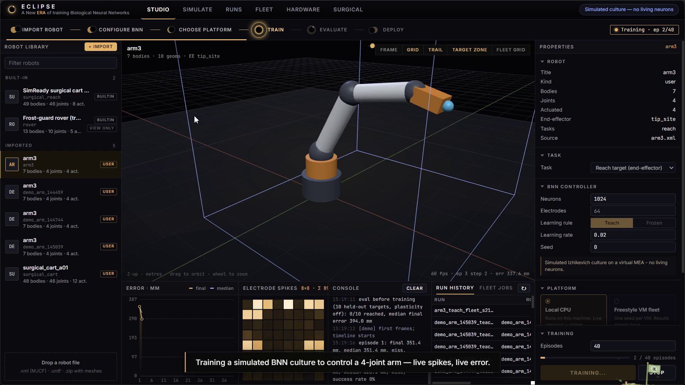
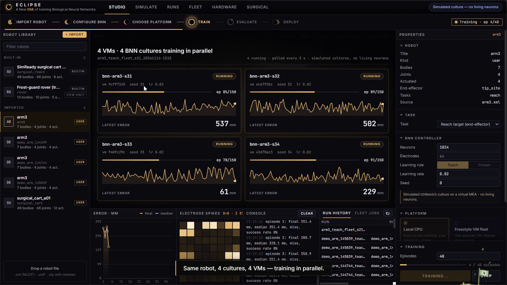
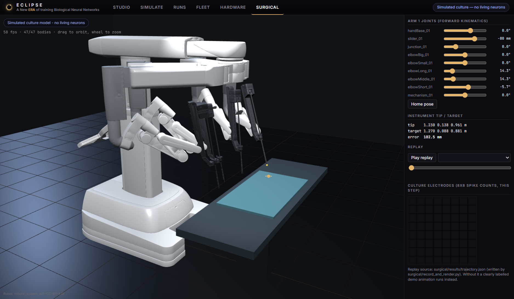

Frost-guard rover · MuJoCo · 100 fixed episodes
72%
PPO (warm-started with behavior cloning) success, against 59% for the hand-written controller.
Eclipse · Biological neural network robot studio
Train any robot with biological neural network controllers — in simulation, across a fleet of VMs, then export the protocol to a living culture.
Simulated Controllers are simulated Izhikevich neuron cultures — no living neurons are used in simulation.
Demo
How it works
Drop in an MJCF or URDF file, or a zip with meshes. Eclipse parses bodies, joints and actuators and shows the robot in a live 3D viewport.
Set up the simulated culture: 1,024 Izhikevich neurons on a 64-electrode MEA, the learning rule (teach or frozen), learning rate and seed.
Train on your own CPU with a live viewport, or fan seeds out across a Freestyle VM fleet, one job per VM.
Watch the arm move as the culture fires: a live error curve, an 8×8 electrode spike heatmap and a streaming console.
Score held-out targets before and after training, replay any run, and compare against IK and frozen-culture baselines.
Export a validated hardware bundle: electrode map, encoder, decoder, teaching protocol, calibration and safety limits for a real MEA.
Features



MJCF, URDF or a zip with meshes. Bodies, joints and actuators are detected automatically.
Izhikevich spiking networks on a 64-electrode MEA, with paired-stimulation teaching or a frozen culture.
See the robot move, the error fall and every electrode fire on a spike heatmap, in real time.
Fan seeds and learning rates out across Freestyle VMs, one job per VM, and collect results back.
Every run is saved with its curve and summary. Replay it in 3D or download the files.
Nominal, novel targets, calibration bias, noise, actuator mismatch and combined stress, inspired by ORBIT-Surgical and SuFIA.
Bundles for generic MEAs, CL1, MCS and MaxWell, with a validator and a mock dry run.
Sim to real
A dish has its own connectivity, and nothing can write synaptic weights into it. So Eclipse exports the closed-loop protocol, not the trained network. A living culture starts untrained.
All stimulation defaults must be validated against vendor and lab limits. A physical robot e-stop is still mandatory.
Results · research preview
Frost-guard rover · MuJoCo · 100 fixed episodes
72%
PPO (warm-started with behavior cloning) success, against 59% for the hand-written controller.
Example arm · taught culture · held-out targets
394 → 91 mm
Median held-out error before vs after paired-stimulation teaching (one seed, 20 episodes; 10% of targets reached). The frozen culture on the same targets went from 394 to 419 mm.
Surgical arm · 6 scenarios · 4 VMs · 12 episodes each
2× closer
Median final error of the taught culture vs an untrained (frozen) culture, e.g. 288 vs 485 mm in the nominal scenario, across 6 stress scenarios on 4 VMs.
| Scenario | Taught | Frozen |
|---|---|---|
| Nominal | 288 mm | 485 mm |
| Novel targets | 345 mm | 600 mm |
| Calibration bias | 261 mm | 464 mm |
| Measurement noise | 245 mm | 497 mm |
| Actuator mismatch | 244 mm | 470 mm |
| Combined stress | 373 mm | 580 mm |
Small episode counts; exploratory. All culture results are from a simulated Izhikevich culture. PPO and IK are engineering references, not biological controllers. The current learning method is not yet adequate for precise surgical reaching.
Download
Checking for the latest build…
Build in progress. Meanwhile, see the GitHub repository (private: request access).
Python 3.12, Node.js and Git. Commands shown for Windows (Git Bash); use .venv/bin on macOS/Linux.
# 1. clone (private repo, access required)
git clone https://github.com/SachchitBalamurugan/neurorover
cd neurorover
# 2. Python environment
python -m venv .venv
.venv/Scripts/pip install cl-sdk==1.0.0 numpy matplotlib
# 3. desktop app
cd app && npm install && npm startFAQ
No. Every controller in Eclipse is a simulated Izhikevich neuron culture (1,024 neurons on a virtual 64-electrode MEA). No living tissue is involved in simulation. The export bundle is designed for real MEAs, so a lab could run the same closed-loop protocol on a living culture, which would start untrained.
The packaged desktop app is for Windows x64. From source, the Python platform and the Electron app run anywhere Python 3.12 and Node.js do (Windows, macOS, Linux), though Windows is what we've tested most. Parallel training uses Freestyle VMs.
Eclipse is an open research preview. There's no pricing; it's research software and the results above are exploratory.
You can export a CL1 bundle and validate it, but the CL1 SDK integration hasn't been run end to end yet. Only the generic target has been tested, and only against a mock backend.